Corsi di musica, canto e teatro a Torino
Corsi e laboratori di musica, canto, percussioni, djing e teatro a Torino e dintorni.
Cerca tutti i workshop17 attività in programma · aggiornato il 23 ottobre 2026
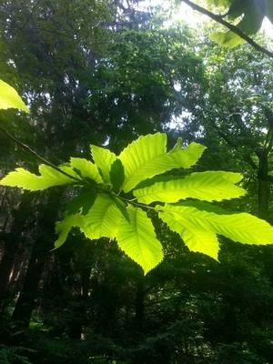
sab24ottMusica e teatroDalla terra al cielo: teatro nei castagnetisabato 24 ottobre, 14:00–17:00Bernezzo (CN) · Gratiscon Mara Olocco per Ecomuseo Terra del Castelmagno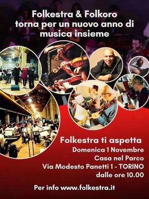
dom1novMusica e teatroOpen day Folkestra: suona e canta folkdomenica 1 novembre, 10:00–18:00Mirafiori (TO) · Gratiscon Folkestra & Folkoro- dal9genMusica e teatroCambia le regole del canto: seminarioda sabato 9 gennaio a domenica 10 gennaio, 09:00–19:00San Salvario (TO) · 180 €con Marco Farinella per Vivere d’Arte
- datada confermareAltroCascina Roccafranca: corsi della stagioneData da confermareMirafiori (TO)con Cascina Roccafranca
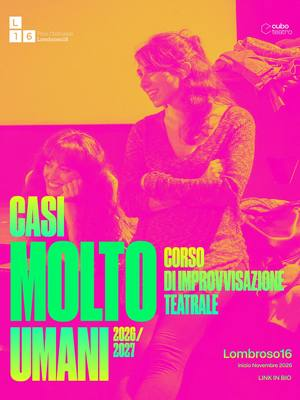
datada confermareMusica e teatroCasi Molto Umani: improvvisazione teatraleData da confermareSan Salvario (TO)con Cubo Teatro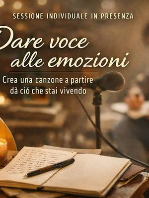
dataa sceltaMusica e teatroDare voce alle emozioni: la tua canzoneData a sceltaTorino · da 35 €con Marta- dataa sceltaMusica e teatroSPLIT Teatro: recitazione, musical e cantoData a sceltaMirafiori (TO)con SPLIT Teatro
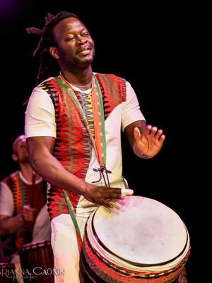
ognigioMusica e teatroPercussioni afro: djembe e ritmiOgni giovedì, 18:30–20:00Barriera di Milano (TO) · 20 € a lezionecon Cheikh Sadibou Fall per Bunker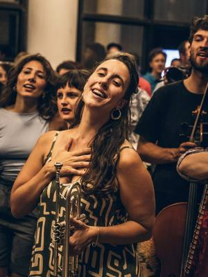
ognimerMusica e teatroCorso di canto: voce e polifonieOgni mercoledì, 19:00–20:15Barriera di Milano (TO) · 150 € a trimestrecon Bunker- ognilunMusica e teatroCorso di chitarra: rock e pop per adultiOgni lunedì, 19:00–20:00Mirafiori (TO) · 44 € al mesecon Andrea Marzolla (Tilt Music) per Casa nel Parco
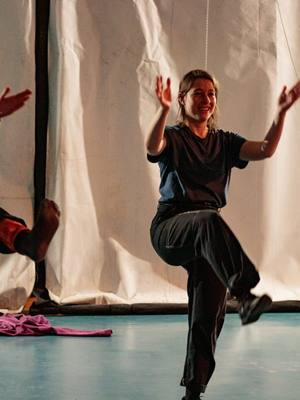
ognivenMusica e teatroCorso di teatro: mimo, clown e parolaOgni venerdì, 19:30–21:00Barriera di Milano (TO) · 40 € al mesecon Giulia Ruggiero e Maddalena Sighinolfi per Bunker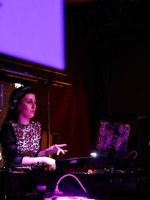
ognimarMusica e teatroCorso di Djing: dalle basi al setOgni martedì, 20:00–22:00Barriera di Milano (TO) · 250 € per 8 lezionicon Dj Giolla per Bunker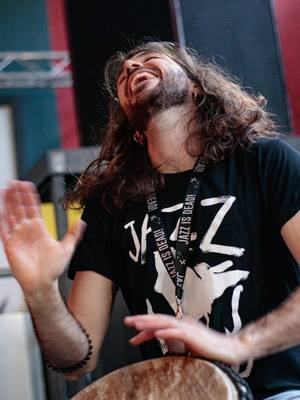
dataa sceltaMusica e teatroCorso di percussioni: suonare insiemeOgni 2 giovedì, 20:00–21:30Barriera di Milano (TO) · 15 € a lezionecon Ivan di Buduo per Bunker- ognigioMusica e teatroVivere la voce insieme: coroOgni giovedì, 20:30–22:00Mirafiori (TO) · 25 € al mesecon Fé Avouglan per Casa nel Parco
- ognimerMusica e teatroProduzione musicale: Ableton Live da zeroOgni mercoledì, 21:00–22:30Barriera di Milano (TO) · 250 € per 10 lezionicon Bunker
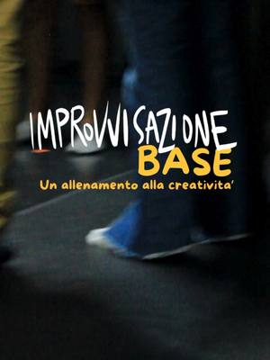
ognimarMusica e teatroImprovvisazione base: corso di teatroOgni martedì, 21:00–23:00Barriera di Milano (TO) · 470 € all’annocon Laboratorio MalaErba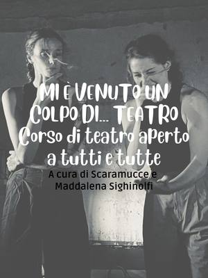
ognimerMusica e teatroColpo di… teatro!: corso aperto a tuttiOgni mercoledì, 21:30–23:00Barriera di Milano (TO) · 30 € al mesecon Scaramucce Teatro e Maddalena Sighinolfi per Bagni Pubblici